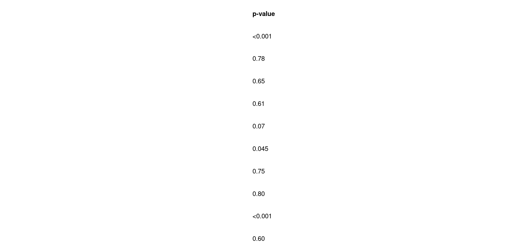
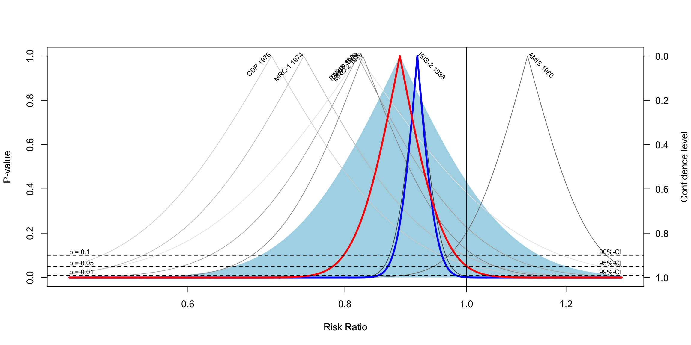
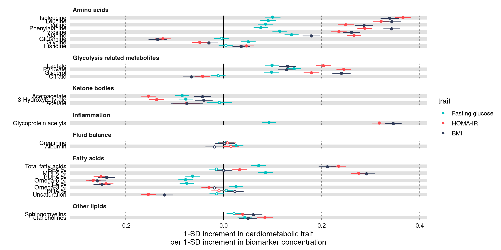
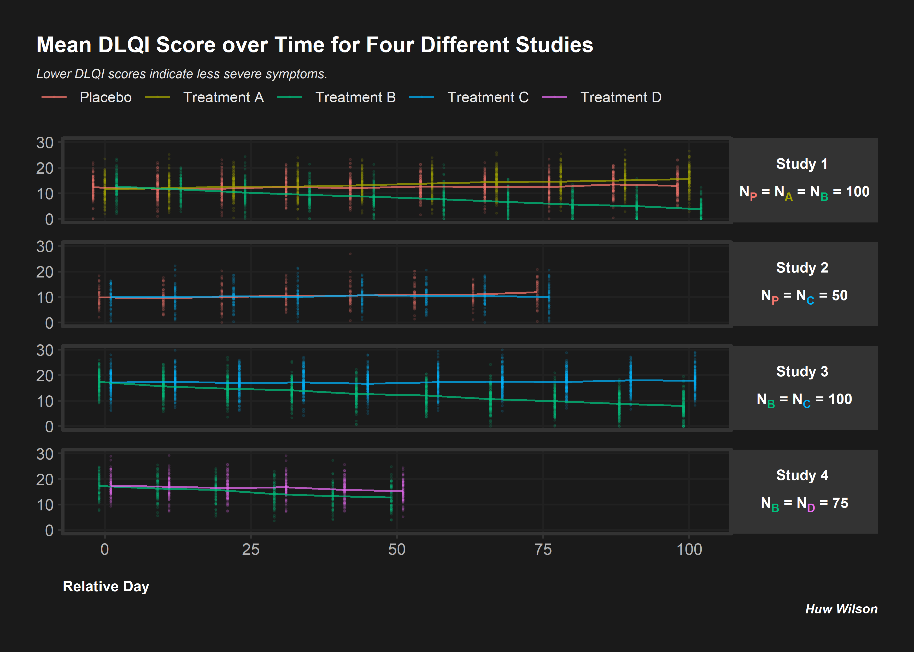
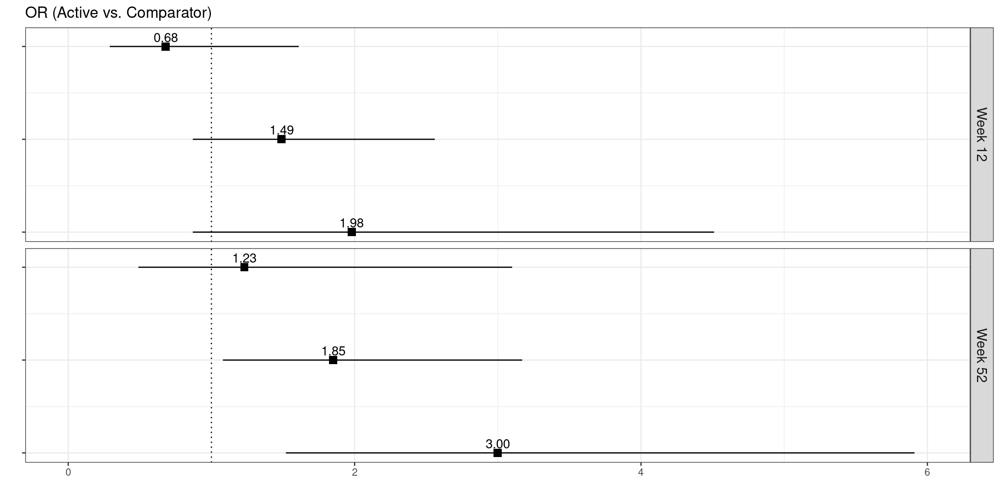
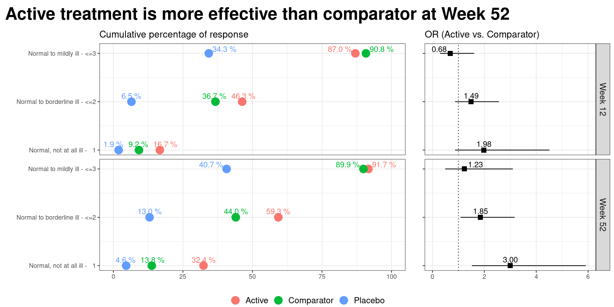

Forest Plot and Meta Analysis
General Forest Plot
Annotated Forest Plots Alternative 1
## Example data frame
dat <- data.frame(
Index = c(1, 2, 3, 4), ## This provides an order to the data
label = c("Age (65 and older versus <65)", "Male versus Female", "High income versus Low income", "High school or higher versus No High school"),
OR = c(1.00, 2.00, 3.00, 0.50),
LL = c(0.25, 0.90, 2.25, 0.2),
UL = c(1.75, 3.10, 3.75, 0.8),
CI = c("0.25, 1.75", "0.90, 3.10", "2.25, 3.75", "0.20, 0.80")
)
datplot1 <- ggplot(dat, aes(y = Index, x = OR)) +
geom_point(shape = 18, size = 5) +
geom_errorbarh(aes(xmin = LL, xmax = UL), height = 0.25) +
geom_vline(xintercept = 1, color = "red", linetype = "dashed", cex = 1, alpha = 0.5) +
scale_y_continuous(name = "", breaks=1:4, labels = dat$label, trans = "reverse") +
xlab("Odds Ratio (95% CI)") +
ylab(" ") +
theme_bw() +
theme(panel.border = element_blank(),
panel.background = element_blank(),
panel.grid.major = element_blank(),
panel.grid.minor = element_blank(),
axis.line = element_line(colour = "black"),
axis.text.y = element_text(size = 12, colour = "black"),
axis.text.x.bottom = element_text(size = 12, colour = "black"),
axis.title.x = element_text(size = 12, colour = "black"))
## Create the table-base pallete
table_base <- ggplot(dat, aes(y=label)) +
ylab(NULL) + xlab(" ") +
theme(plot.title = element_text(hjust = 0.5, size=12),
axis.text.x = element_text(color="white", hjust = -3, size = 25), ## This is used to help with alignment
axis.line = element_blank(),
axis.text.y = element_blank(),
axis.ticks = element_blank(),
axis.title.y = element_blank(),
legend.position = "none",
panel.background = element_blank(),
panel.border = element_blank(),
panel.grid.major = element_blank(),
panel.grid.minor = element_blank(),
plot.background = element_blank())
## OR point estimate table
tab1 <- table_base +
labs(title = "space") +
geom_text(aes(y = rev(Index), x = 1, label = sprintf("%0.1f", round(OR, digits = 1))), size = 4) + ## decimal places
ggtitle("OR")
## 95% CI table
tab2 <- table_base +
geom_text(aes(y = rev(Index), x = 1, label = CI), size = 4) +
ggtitle("95% CI")
## Merge tables with plot
grid.arrange(plot1, tab1, tab2,
layout_matrix = matrix(c(1,1,1,1,1,1,1,1,1,1,2,3,3), nrow = 1))
Annotated Forest Plots Alternative 2
# library("gt")
res_log <- read_csv("https://raw.githubusercontent.com/kathoffman/steroids-trial-emulation/main/output/res_log.csv")
res <- read_csv("https://raw.githubusercontent.com/kathoffman/steroids-trial-emulation/main/output/res.csv")
# res <- res_log |>
# rename_with(~str_c("log.", .), estimate:conf.high) |>
# select(-p.value) |>
# full_join(res)
ForestData <- res_log %>%
rename_with(~str_c("log.", .), estimate:conf.high) %>%
select(-p.value) %>%
full_join(res)
## Get a glimpse of your data
## glimpse(ForestData)
ForestData %>% kbl() %>%
kable_styling(bootstrap_options = c("striped", "hover", "condensed"))| model | log.estimate | log.conf.low | log.conf.high | estimate | conf.low | conf.high | p.value |
|---|---|---|---|---|---|---|---|
| A | -0.6846879 | -0.8947661 | -0.4746097 | 0.5042476 | 0.4087032 | 0.6221278 | 0.0000000 |
| B | -0.0525578 | -0.4201151 | 0.3149994 | 0.9487994 | 0.6569712 | 1.3702585 | 0.7792783 |
| C | -0.0864096 | -0.4567781 | 0.2839589 | 0.9172184 | 0.6333208 | 1.3283783 | 0.6474743 |
| D | -0.1214702 | -0.5869119 | 0.3439714 | 0.8856174 | 0.5560418 | 1.4105383 | 0.6089951 |
| E | -0.4216403 | -0.8819218 | 0.0386411 | 0.6559699 | 0.4139865 | 1.0393974 | 0.0725863 |
| F | -0.2575052 | -0.5093796 | -0.0056308 | 0.7729776 | 0.6008682 | 0.9943850 | 0.0450936 |
| G | 0.0526079 | -0.2671835 | 0.3723992 | 1.0540163 | 0.7655326 | 1.4512123 | 0.7471289 |
| H | 0.0427286 | -0.2871902 | 0.3726475 | 1.0436546 | 0.7503690 | 1.4515726 | 0.7996192 |
| I | -0.4624971 | -0.7340078 | -0.1909864 | 0.6297092 | 0.4799815 | 0.8261438 | 0.0008419 |
| J | 0.0798845 | -0.2224750 | 0.3822440 | 1.0831619 | 0.8005350 | 1.4655697 | 0.6045771 |
## Make point and line range section of the plot
p_mid <- ForestData |>
## 1. Reverse order of factor levels
ggplot(aes(y = fct_rev(model))) +
theme_classic() +
## 2. Show all of our information (point estimate and 95% confidence interval) on the graph
geom_point(aes(x=log.estimate), shape=15, size=3) +
geom_linerange(aes(xmin=log.conf.low, xmax=log.conf.high)) +
## 3. Add a vertical line at 0 and rename the x axis, zoom to the exact height and width
geom_vline(xintercept = 0, linetype="dashed") +
labs(x="Log Hazard Ratio", y="") +
coord_cartesian(ylim=c(1,11), xlim=c(-1, .5)) +
## 4. Add text about protective vs. harmful using the annotate layer
annotate("text", x = -.32, y = 11, label = "Corticosteroids protective") +
annotate("text", x = .3, y = 11, label = "Corticosteroids harmful") +
## 5. remove everything on the y axis
theme(axis.line.y = element_blank(),
axis.ticks.y= element_blank(),
axis.text.y= element_blank(),
axis.title.y= element_blank())
p_mid## Create estimate annotations plot
# wrangle results into pre-plotting table form
# res_plot <- ForestData |>
# # round estimates and 95% CIs to 2 decimal places for journal specifications
# mutate(across(
# c(estimate, conf.low, conf.high),
# ~ str_pad(
# round(.x, 2),
# width = 4,
# pad = "0",
# side = "right"
# )
# ),
# # add an "-" between HR estimate confidence intervals
# estimate_lab = paste0(estimate, " (", conf.low, "-", conf.high, ")")) |>
# # round p-values to two decimal places, except in cases where p < .001
# mutate(p.value = case_when(
# p.value < .001 ~ "<0.001",
# round(p.value, 2) == .05 ~ as.character(round(p.value,3)),
# p.value < .01 ~ str_pad( # if less than .01, go one more decimal place
# as.character(round(p.value, 3)),
# width = 4,
# pad = "0",
# side = "right"
# ),
# TRUE ~ str_pad( # otherwise just round to 2 decimal places and pad string so that .2 reads as 0.20
# as.character(round(p.value, 2)),
# width = 4,
# pad = "0",
# side = "right"
# )
# )) |>
# # add a row of data that are actually column names which will be shown on the plot in the next step
# bind_rows(
# data.frame(
# model = "Model",
# estimate_lab = "Hazard Ratio (95% CI)",
# conf.low = "",
# conf.high = "",
# p.value = "p-value"
# )
# ) |>
# mutate(model = fct_rev(fct_relevel(model, "Model")))
# saveRDS(res_plot, file = "res_plot.rds")
res_plot <- readRDS("./01_Datasets/res_plot.rds")
res_plot %>% kbl() %>%
kable_styling(bootstrap_options = c("striped", "hover", "condensed"))| model | log.estimate | log.conf.low | log.conf.high | estimate | conf.low | conf.high | p.value | estimate_lab |
|---|---|---|---|---|---|---|---|---|
| A | -0.6846879 | -0.8947661 | -0.4746097 | 0.50 | 0.41 | 0.62 | <0.001 | 0.50 (0.41-0.62) |
| B | -0.0525578 | -0.4201151 | 0.3149994 | 0.95 | 0.66 | 1.37 | 0.78 | 0.95 (0.66-1.37) |
| C | -0.0864096 | -0.4567781 | 0.2839589 | 0.92 | 0.63 | 1.33 | 0.65 | 0.92 (0.63-1.33) |
| D | -0.1214702 | -0.5869119 | 0.3439714 | 0.89 | 0.56 | 1.41 | 0.61 | 0.89 (0.56-1.41) |
| E | -0.4216403 | -0.8819218 | 0.0386411 | 0.66 | 0.41 | 1.04 | 0.07 | 0.66 (0.41-1.04) |
| F | -0.2575052 | -0.5093796 | -0.0056308 | 0.77 | 0.60 | 0.99 | 0.045 | 0.77 (0.60-0.99) |
| G | 0.0526079 | -0.2671835 | 0.3723992 | 1.05 | 0.77 | 1.45 | 0.75 | 1.05 (0.77-1.45) |
| H | 0.0427286 | -0.2871902 | 0.3726475 | 1.04 | 0.75 | 1.45 | 0.80 | 1.04 (0.75-1.45) |
| I | -0.4624971 | -0.7340078 | -0.1909864 | 0.63 | 0.48 | 0.83 | <0.001 | 0.63 (0.48-0.83) |
| J | 0.0798845 | -0.2224750 | 0.3822440 | 1.08 | 0.80 | 1.47 | 0.60 | 1.08 (0.80-1.47) |
| Model | NA | NA | NA | NA | p-value | Hazard Ratio (95% CI) |
p_left <-
res_plot |>
ggplot(aes(y = model)) +
geom_text(aes(x = 0, label = model), hjust = 0, fontface = "bold") +
geom_text(
aes(x = 1, label = estimate_lab),
hjust = 0,
fontface = ifelse(res_plot$estimate_lab == "Hazard Ratio (95% CI)", "bold", "plain")
) +
## Remove the background and edit the sizing
theme_void() +
coord_cartesian(xlim = c(0, 4))
p_left
## Create p-value annotations
p_right <-
res_plot |>
ggplot() +
geom_text(
aes(x = 0, y = model, label = p.value),
hjust = 0,
fontface = ifelse(res_plot$p.value == "p-value", "bold", "plain")
) +
theme_void()
p_right
## Merge tables with plot
# library("gridExtra")
grid.arrange(p_left, p_mid, p_right,
layout_matrix = matrix(c(1,1,1,2,2,2,2,2,2,2,2,2,3,3), nrow = 1))
## ggsave("forest-plot.eps", width=9, height=4)meta package
Forest.df <- data.frame(study=c('S1', 'S2', 'S3', 'S4', 'S5', 'S6', 'S7'),
index=1:7,
effect=c(-.4, -.25, -.1, .1, .15, .2, .3),
lower=c(-.43, -.29, -.17, -.02, .04, .17, .27),
upper=c(-.37, -.21, -.03, .22, .24, .23, .33))
## create forest plot
ggplot(data=Forest.df,
aes(y=index, x=effect, xmin=lower, xmax=upper,
label=as.character(effect))) +
geom_label(vjust=-0.1) +
geom_errorbarh(height=.1) +
scale_y_continuous(breaks=1:nrow(Forest.df), labels=Forest.df$study) +
labs(title='Effect Size by Study',
x='Effect Size',
y = 'Study') +
geom_vline(xintercept=0, color='black', linetype='dashed', alpha=.5) +
theme_classic() # theme_minimal()
## https://bookdown.org/MathiasHarrer/Doing_Meta_Analysis_in_R/forest.html
# library("meta")
data(Fleiss93)
metaresult<-metabin(event.e, n.e,event.c,n.c,data=Fleiss93,sm="RR",
studlab=paste(study, year),random=FALSE)
forest(metaresult)
ggforestplot package (based on SE)
The R package ggforestplot allows to plot vertical forest plots, a.k.a. blobbograms, and it’s based on ggplot2, see more click (here)[https://nightingalehealth.github.io/ggforestplot/articles/ggforestplot.html]
Basic Forestplot
# devtools::install_github("NightingaleHealth/ggforestplot")
# library("ggforestplot")
df <-
ggforestplot::df_linear_associations %>%
filter(
trait == "BMI",
dplyr::row_number() <= 30
)
ggforestplot::forestplot(
df = df,
name = name,
estimate = beta,
se = se,
pvalue = pvalue,
psignif = 0.002,
xlab = "1-SD increment in BMI\nper 1-SD increment in biomarker concentration",
title = "Associations of blood biomarkers to BMI"
)
Comparing several traits
# Extract the biomarker names
selected_bmrs <- df %>% pull(name)
# Filter the demo dataset for the biomarkers above and all three traits:
# BMI, HOMA-IR and fasting glucose
df_compare_traits <-
ggforestplot::df_linear_associations %>%
filter(name %in% selected_bmrs) %>%
# Set class to factor to set order of display.
mutate(
trait = factor(
trait,
levels = c("BMI", "HOMA-IR", "Fasting glucose")
)
)
# Draw a forestplot of cross-sectional, linear associations
# Notice how the df variable 'trait' is used here to color the points
ggforestplot::forestplot(
df = df_compare_traits,
estimate = beta,
pvalue = pvalue,
psignif = 0.002,
xlab = "1-SD increment in cardiometabolic trait\nper 1-SD increment in biomarker concentration",
title = "Biomarker associations to metabolic traits",
colour = trait
)
Grouping the biomarkers
# library("ggforce")
# Filter df_NG_biomarker_metadata, that contain the groups, for only the 30
# biomarkers under discussion
df_grouping <-
df_NG_biomarker_metadata %>%
filter(name %in% df_compare_traits$name)
# Join the association data frame df_compare_traits with group data
df_compare_traits_groups <-
df_compare_traits %>%
# use right_join, with df_grouping on the right, to preserve the order of
# biomarkers it specifies.
dplyr::right_join(., df_grouping, by = "name") %>%
dplyr::mutate(
group = factor(.data$group, levels = unique(.data$group))
)
# Draw a forestplot of cross-sectional, linear associations.
forestplot(
df = df_compare_traits_groups,
estimate = beta,
pvalue = pvalue,
psignif = 0.002,
xlab = "1-SD increment in cardiometabolic trait\nper 1-SD increment in biomarker concentration",
colour = trait
) +
ggforce::facet_col(
facets = ~group,
scales = "free_y",
space = "free"
)
ggplot2
Master_Cancer_D01 <- read_excel("./01_Datasets/HR_Ratio_2024.02.09.xlsx")
Breast_Cancer_Factor <- c(
"3. Impact of Adjuvant Chemotherapy on Breast Cancer Survival",
"3. Breast Cancer Diagnosis to Surgery Time",
"2. Platinum Chemotherapy for Early Triple-Negative Breast Cancer",
"2. Breast Cancer Diagnosis to Surgery Time",
"1. Trastuzumab Regimen in HER2+ Early-Stage Breast Cancer: Meta-Analysis",
"1. Breast Cancer Diagnosis to Surgery Time"
)
Breast_Cancer_Label<- c(
" Impact of Adjuvant Chemotherapy on Breast Cancer Survival",
" Breast Cancer Diagnosis to Surgery Time",
" Platinum Chemotherapy for Early Triple-Negative Breast Cancer",
" Breast Cancer Diagnosis to Surgery Time",
" Trastuzumab Regimen in HER2+ Early-Stage Breast Cancer: Meta-Analysis",
" Breast Cancer Diagnosis to Surgery Time"
)
Breast_Cancer_Label <- paste0(Breast_Cancer_Label,
"\n",
rev(Master_Cancer_D01[which(Master_Cancer_D01$CancerType == "Breast Cancer"),]$Cite))
Breast_Cancer_Data <- Master_Cancer_D01 %>%
filter(CancerType == "Breast Cancer") %>%
mutate(Category = factor(Category, levels = Breast_Cancer_Factor, labels=Breast_Cancer_Label))
Breast_Cancer_Plot <-
Breast_Cancer_Data %>%
ggplot(aes(x = Estimate, y = Category)) +
scale_x_continuous(trans = "log10",
breaks = c(0.6, 0.8, 1.0, 1.2, 1.5),
limits = c(0.5, 1.5)) +
theme_forest() +
scale_colour_ng_d() +
scale_fill_ng_d() +
geom_stripes() +
geom_vline(xintercept = 1, linetype = "dashed", size = 0.5, colour = "black") +
geom_hline(yintercept = 4.5, linetype = "solid", size = 1.2, colour = "black") +
geom_hline(yintercept = 2.5, linetype = "solid", size = 1.2, colour = "black") +
geom_effect(ggplot2::aes(xmin = conf.low, xmax = conf.high),
position = ggstance::position_dodgev(height = 0.5)) +
ggplot2::scale_shape_manual(values = c(21L, 22L, 23L,
24L, 25L)) + guides(colour = guide_legend(reverse = TRUE),
shape = guide_legend(reverse = TRUE)) +
annotate("text", x = 0.65, y = Inf, label = "Relative Improvement in\nOverall Survival From Treatment",
hjust = 0, vjust = 1, colour = "black",size = 5) +
annotate("text", x = 1.08, y = Inf, label = "Relative Decrease in\nOverall Survival From Delay",
hjust = 0, vjust = 1, colour = "black",size = 5) +
geom_textbox(aes(label = paste0(format(Estimate, digits = 3),
" [",
format(conf.low, digits = 3),",",
format(conf.high, digits = 3),
"]"),
x = Estimate), hjust = 0.5, vjust = 1.3, width = 0.132)+
labs(title = "Figure 1: Breast Cancer") +
labs(subtitle = "") +
labs(x = "Hazard Ratio") +
labs(y = "") +
theme(text = element_text(size = 16))
png('./02_Plots/Visualization/ForestPlot/HR_Breast_Cancer.png',width=16, height=8,unit="in", res=600)
Breast_Cancer_Plot
dev.off()## cairo_pdf
## 2knitr::include_graphics("./02_Plots/Visualization/ForestPlot/HR_Breast_Cancer.png")
Alternative to Forest Plot DLQI Data
Errorbar

Source: Figure 2 in Muntyanu A, Gabrielli S, Donovan J, Gooderham M, Guenther L, Hanna S, et al. The burden of alopecia areata: A scoping review focusing on quality of life, mental health and work productivity. J Eur Acad Dermatol Venereol. 2023; 37: 1490–1520. https://doi.org/10.1111/jdv.18926
# Example data frame
data <- data.frame(
Study_Number = 1:12,
Mean_DLQI = c(4.8, 3.5, 2.1, 10.69, 6.1, 7.9, 7.7, 8.1636, 7.21, 5.8, 6.8, 6.4),
Lower_CI = c(2, 1, 1, 9, 4, 6, 5, 7, 6, 4, 5, 5), # Example lower CI values
Upper_CI = c(8, 6, 4, 12, 8, 10, 10, 10, 9, 8, 9, 8) # Example upper CI values
)
ggplot(data, aes(x = factor(Study_Number), y = Mean_DLQI)) +
geom_col(fill = "salmon", width = 0.7) + # Bars with salmon fill
geom_errorbar(aes(ymin = Lower_CI, ymax = Upper_CI), width = 0.2, color = "black") + # Error bars
geom_label(aes(label = round(Mean_DLQI, 2)), vjust = -1.5, fill = "white", color = "black",
fontface = "bold", label.size = 0.5) + # Label with white background
labs(
title = "DLQI in Alopecia Areata Studies",
x = "Study Number",
y = "DLQI Score"
) +
theme_minimal() +
theme(
plot.title = element_text(hjust = 0.5), # Centering the title
axis.title.x = element_text(face = "bold"),
axis.title.y = element_text(face = "bold"),
axis.text.x = element_text(angle = 90, hjust = 1) # Angle x axis text for readability
)Mean DLQI
This is a simple, but clean visualisation with logical ordering of studies based on mean DLQI score. As per some of the other submissions, the axes have been flipped here compared to the original, published visualisation. This allows for the author name and sample size to be displayed on the label, as well as sample size. However, sample size could more effectively be encoded within the plot itself, to save the reader from having to study the axis labels at length. There is a telling title added with colours nicely included to link the title to the plot itself. Additional information is deferred to a footnote, and here shading is used to display the meaningful DLQI categories (again, these categories are for DLQI scores at a total level). These categories motivate a panel discussion on how useful it is to display these categories, corresponding to individual patients, for a presentation of the mean. The issue here is that, due to DLQI only taking integer scores for each patient, the meaningful categories have gaps between their extremes. The author has chosen to leave these as blank space in the plot, which could be confusing for a reader who is not familiar with DLQI scores or the categories. An alternative would be to use the midpoints (1.5 and 5.5 for the displayed categories) as the values to change the shading at. This submission also lead to a nice discussion on minimising white space, while avoiding confusion. The user only takes the x-axis as far as a score of 10, which captures all the observed data, while presenting it in the maximum amount of space to allow comparison between the categories. However, it could mislead the reader that several studies have a mean DLQI score close to the upper limit of those which can be taken by the tool (which is not the case, DLQI scores can be as high as 30). Taking the x-axis as far as 30 here would give an easier interpretation of the overall experience of patients with alopecia areata, compared with what is possible.


# Sample data
data <- data.frame(
Study = c("Abedini et al.", "Liu et al.", "Shi et al.", "Ghajarzadeh et al.",
"Velez-Muniz et al.", "Qi et al.", "Ito et al.", "Ferentinos et al.", "Andersen et al."),
N = c(176, 383, 532, 100, 126, 698, 400, 52, 1494),
Mean_DLQI = c(1.5, 2.5, 3.0, 4.0, 5.5, 4.5, 6.0, 6.5, 7.0),
Lower_CI = c(0.5, 1.5, 2.5, 3.5, 4.0, 3.5, 5.5, 6.0, 6.0),
Upper_CI = c(2.5, 3.5, 3.5, 4.5, 7.0, 5.5, 6.5, 8.0, 10.0)
)
data <- data %>%
arrange(Mean_DLQI) %>%
mutate(Study = factor(Study, levels = Study))
# Determine the number of studies to set the y position for annotations
num_studies <- nrow(data)
ggplot(data, aes(y = Study, x = Mean_DLQI, xmin = Lower_CI, xmax = Upper_CI)) +
geom_rect(aes(xmin = 0, xmax = 1, ymin = -Inf, ymax = Inf), fill = "#FFD885", alpha = 0.2) + # None
geom_rect(aes(xmin = 2, xmax = 5, ymin = -Inf, ymax = Inf), fill = "#E4D383", alpha = 0.2) + # Small
geom_rect(aes(xmin = 6, xmax = 10, ymin = -Inf, ymax = Inf), fill = "#9BBC93", alpha = 0.2) + # Moderate
geom_pointrange(size = 0.5, color = "black") +
annotate("text", x = 1, y = num_studies + 0.5, label = "None", vjust = 0) +
annotate("text", x = 3.5, y = num_studies + 0.5, label = "Small", vjust = 0) +
annotate("text", x = 7.5, y = num_studies + 0.5, label = "Medium", vjust = 0) +
scale_y_discrete(limits = c(levels(data$Study), " "), expand = c(0, 0.1)) + # Extend y-axis
scale_x_continuous("Mean DLQI Score", breaks = 0:10) +
labs(y = "Study", title = "Across Studies, alopecia areata had on average a small or moderate impact on patients' lives") +
theme_minimal() +
theme(panel.grid.major = element_blank(), panel.grid.minor = element_blank())
# Clear environment and read in libraries
rm(list = ls())
# Simulate 4 studies with different treatments/sample sizes
subjects <- as.character(seq(1, 850))
trts <- c(sample(c('Placebo', 'A', 'B'),
size = 300, replace = T),
sample(c('Placebo', 'C'),
size = 100, replace = T),
sample(c('B', 'C'),
size = 300, replace = T),
sample(c('B', 'D'),
size = 150, replace = T))
studies <- c(rep('Study 1', 300),
rep('Study 2', 100),
rep('Study 3', 300),
rep('Study 4', 150))
visits <- c(rep(seq(0, 100, length.out = 10), each = 300),
rep(seq(0, 75, length.out = 8), each = 100),
rep(seq(0, 100, length.out = 10), each = 300),
rep(seq(0, 50, length.out = 6), each = 150))
# Random study effects
study_effs <- c(rep(rnorm(1, sd = 3), 300),
rep(rnorm(1, sd = 3), 100),
rep(rnorm(1, sd = 3), 300),
rep(rnorm(1, sd = 3), 150))
# Random subject effects
sub_effs <- rnorm(850, 0, 3)
# Repeat values for each visit e.g. in study 1, each subject needs 10 records
split <- function(vec){
return(
c(rep(vec[1:300], 10),
rep(vec[301:400], 8),
rep(vec[401:700], 10),
rep(vec[701:850], 6)))
}
# Create study dataframe
df <- data.frame(subject = split(subjects),
study = split(studies),
trt = split(trts),
study_eff = split(study_effs),
sub_eff = split(sub_effs),
time = as.character(round(visits, 0)))
# Find each subject/treatment combo - will need to merge this on later
subject_df <- df %>%
select(subject, trt) %>%
mutate(trt = if_else(trt != 'Placebo',
paste0('Treatment ', trt),
trt)) %>%
unique()
# Coefficients for treatment variables
beta0 <- 15
betaA <- 0.2
betaB <- -0.1
betaC <- 0.1
betaD <- 0.05
# Coefficients for interaction variables
gamma <- 0.01
gammaA <- 0.025
gammaB <- -0.1
gammaC <- 0.0001
gammaD <- -0.05
# Find DLQI score for each
dlqi_calc <- function(n, A, B, C, D, time, study_eff, sub_eff){
dlqi <- beta0 + betaA*A + betaB*B +
betaC*C + betaD*D +
gamma*time + gammaA*A*time + gammaB*B*time +
gammaC*C*time + gammaD*D*time +
sub_eff + study_eff
return(rnorm(n, dlqi, 3))
}
dlqi_df <- df %>%
# Create variables needed for dlqi_calc
pivot_wider(id_cols = c(subject, study, study_eff, sub_eff, time),
names_from = trt,
values_from = trt,
values_fn = length,
values_fill = 0) %>%
mutate(time = as.numeric(time),
dlqi = dlqi_calc(n(), A, B, C, D, time, study_eff, sub_eff),
# Apply cut-off thresholds
dlqi = case_when(
dlqi < 0 ~ 0,
dlqi > 30 ~ 30,
T ~ dlqi)) %>%
left_join(subject_df, by = 'subject') %>%
group_by(trt, study, time) %>%
mutate(mean = mean(dlqi),
# Add some jitter so plot points are not over-layed
time = case_when(study == 'Study 1' & trt == 'Placebo' ~ time - 2,
study == 'Study 1' & trt == 'Treatment B' ~ time + 2,
study == 'Study 2' & trt == 'Placebo' ~ time - 1,
study == 'Study 2' & trt == 'Treatment C' ~ time + 1,
study == 'Study 3' & trt == 'Treatment B' ~ time - 1,
study == 'Study 3' & trt == 'Treatment C' ~ time + 1,
study == 'Study 4' & trt == 'Treatment D' ~ time + 1,
study == 'Study 4' & trt == 'Treatment B' ~ time - 1,
T ~ time))
# Color the subscript treatment labels
color_label <- function(color, trt){
paste0("N",
"<sub><span style = 'color:", color, ";'>", trt, "</span></sub></span>")
}
nP <- color_label(hue_pal()(5)[1], 'P')
nA <- color_label(hue_pal()(5)[2], 'A')
nB <- color_label(hue_pal()(5)[3], 'B')
nC <- color_label(hue_pal()(5)[4], 'C')
nD <- color_label(hue_pal()(5)[5], 'D')
# Create the desired facet labels
study.labs <- c(paste0('Study 1 <br><br>',
nP, ' = ', nA, ' = ', nB, ' = 100'),
paste0('Study 2 <br><br>' ,
nP, ' = ', nC, ' = ', '50'),
paste0('Study 3 <br><br>',
nB, ' = ', nC, ' = ', '100'),
paste0('Study 4 <br><br>',
nB, ' = ', nD, ' = ', '75'))
names(study.labs) <- c('Study 1', 'Study 2', 'Study 3', 'Study 4')
# Create the plot
png("./02_Plots/Visualization/ForestPlot/DLQI_5.png", res = 500, height = 5, width = 7, units = 'in')
ggplot(data = dlqi_df) +
geom_point(aes(x = time,
y = dlqi,
color = trt), alpha = 0.1, size = 0.3) +
facet_wrap(~study, ncol = 1, strip.position = 'right',
labeller = labeller(study = study.labs)) +
geom_line(aes(x = time,
y = mean,
group = trt,
color = trt),
size = 0.5, alpha = 0.75) +
theme(panel.background = element_rect(fill = 'gray10'),
panel.border = element_rect(color = 'gray20',
size = unit(1, 'in'),
fill = NA),
plot.margin = margin(20, 20, 20, 20),
panel.grid.minor = element_blank(),
plot.background = element_rect(fill = 'gray10',
color = 'gray10'),
panel.grid.major = element_line(color ='gray13'),
legend.position = c(0.43, 1.17),
legend.justification = 'top',
legend.background = element_rect(fill = 'gray10'),
legend.title = element_blank(),
legend.key = element_rect(fill = 'gray10'),
legend.text.align = 0,
legend.text = element_text(color = 'gray90',
size = 8),
strip.background = element_rect(fill = 'gray20'),
panel.spacing = unit(0.15, 'in'),
strip.text.y = element_markdown(angle = 0,
color = 'white',
face = 'bold',
size = 8),
axis.text = element_text(color = 'gray70'),
axis.title.x = element_text(hjust = 0,
color = 'white',
face = 'bold',
margin = margin(t = 12.5),
size = 8),
plot.title = element_text(color = 'white',
hjust = 0,
face = 'bold',
margin = margin(b = 7),
size = 12),
plot.subtitle = element_text(color = 'gray90',
face = 'italic',
size = 7,
margin = margin(b = 32)),
plot.title.position = 'plot',
plot.caption.position = 'plot',
plot.caption = element_text(size = 7,
color = 'white',
face = 'bold.italic')) +
coord_cartesian(ylim = c(0, 30), clip = 'off') +
guides(color = guide_legend(nrow = 1)) +
labs(x = 'Relative Day',
y = NULL,
title = 'Mean DLQI Score over Time for Four Different Studies',
caption = 'Huw Wilson',
subtitle = 'Lower DLQI scores indicate less severe symptoms.')
dev.off()## png
## 2
Informative Panel
This is an informative submission which can be broken down into its different panels. These panels are supplemented by additional links and informative subheadings to aid understanding. The user is first presented with some general information about the studies (demographics, as well as sample size). The cells presenting sample size are shaded in accordance with the sample size, and these sample sizes are used to provide a logical ordering of the studies. The choice of the intense shade for the largest sample size immediately draws our attention to that study. The next panel then displays small 5-number summaries for the total DLQI in each study (presenting mean, medians, quartiles and SD). One panellist did pick out that the choice of display for the median and quartiles could confuse a reader who does not take care to read the legend, as they could interpret the display as a boxplot (which would have the quartiles displayed differently). A shaded is applied within this column, which is intuitive with ‘clearance’ of issues and the intense, dark red shade depicting the largest (negative) impact. It could be argued that the select shades should be based on the DLQI score range of 0 to 30, as opposed to the observed means for the selected studies (could mislead that the highest mean of 10.7, here, is towards the upper extreme of possible DLQI scores). The final panel presents density dot plots for simulated patient level data. While the individual points are a little small to make out (meaning we don’t see a lot for some of the smaller studies), this nicely highlights how summary stats may not capture the experience of many patients, per other submissions which have presented simulated patient level data. The mean is added as a reference line to aid interpretation, and the x-axis presents the full range of 0 to 30 here, indicating that across studies, the bulk of patients have DLQI scores towards the lower end of the DLQI range (mitigating against misunderstanding which could have been caused by the shading in the previous panel, as well as driving home just how different some of the sample sizes are)


Individual Study DLQI
The visualisation had simulated the DLQI scores of individual patients, to provide mean and standard deviations equal to those published for each of the studies. These individual data points are then plotted for each of the studies, with the corresponding densities displayed. This nicely highlights, in this case, how a simple presentation of mean and standard deviation may not capture the experience of many of the individual patients within the studies. The mean for each study is still displayed as a diamond, and has its size set proportional to the sample size for the respective study. Such a display is effectively used in some of the other submissions from this webinar, but here does sometimes cause the mean to be somewhat difficult to spot, particularly for small studies with a mean value close to an integer score (where it overlaps with individual data points – see for instance, study 11). Reference lines are added to display the meaningful score categories which exist for DLQI total score at a patient level. These in turn dictate the colours used for each study, with a telling title added to provide an interpretation of the overall patient experience. A more convincing message could have been delivered by applying a logical sorting based on e.g. mean score, rather than study number.
Double Dot Plot

Lollipop/forest plot
# library(RCurl)
# library(ggrepel)
# library(cowplot)
# library(ggtext)
y <- read.csv("./01_Datasets/CGI_S_3_groups_csv.csv") %>%
rename(Group = CGI)
l <- y %>%
pivot_longer(cols = X1:X7,
names_to = "Category",
values_to = "n") %>%
mutate(Category = as.numeric(gsub("X", "", Category))) %>%
group_by(Week, Group) %>%
arrange(Category) %>%
mutate(
CumN = cumsum(n),
Week = paste("Week", Week),
CumFreq = CumN / Total.sample.size,
Freq = n / Total.sample.size,
`Cumulative %` = round(CumFreq * 100, 1),
`%` = round(Freq * 100, 1)
) %>%
ungroup() %>%
group_by(Week, Category) %>%
arrange(Group, .by_group = T) %>%
mutate(
Odds = CumFreq / (1 - CumFreq),
OR = ifelse(Group == "Active", round(Odds / Odds[2], 2), NA),
selogOR = ifelse(Group == "Active", sqrt(
1 / CumN + 1 / (Total.sample.size - CumN) + 1 / CumN[2] + 1 / (Total.sample.size[2] -
CumN[2])
), NA),
ORlower95CI = ifelse(Group == "Active", round(exp(log(OR) - 1.96 * selogOR), 2), NA),
ORupper95CI = ifelse(Group == "Active", round(exp(log(OR) + 1.96 * selogOR), 2), NA)
)
lk = 3
labs <- c("Normal, not at all ill - 1",
"Normal to borderline ill - <=2",
"Normal to mildly ill - <=3")
p1 <-
ggplot(data = l[l$Category <= k,], aes(x = `Cumulative %`, y = Category, col =
Group)) +
geom_point(size = 5) +
facet_grid(rows = vars(Week)) +
labs(title = "Cumulative percentage of response", y = "", x = "") +
scale_y_continuous(breaks = 1:k, labels = labs) +
scale_x_continuous(limits = c(0, 100)) +
theme_bw() +
theme(legend.position = "none",
strip.text = element_blank()) +
geom_text_repel(aes(label = paste(sprintf(
"%.1f", `Cumulative %`
), "%")),
nudge_y = 0.1)
p1legend_b <- get_legend(p1 +
guides(color = guide_legend(nrow = 1)) +
theme(legend.position = "bottom",
legend.title = element_blank(),
legend.text = element_text(size = 12)))
p2 <-
ggplot(data = l[l$Category <= k &
!is.na(l$OR),], aes(x = OR, y = Category)) +
geom_point(size = 3, pch = 15) +
geom_linerange(aes(xmin = ORlower95CI, xmax = ORupper95CI)) +
geom_vline(xintercept = 1, linetype = 3) +
facet_grid(rows = vars(Week)) +
scale_y_continuous(breaks = 1:k, labels = labs) +
scale_x_continuous(limits = c(0, 6)) +
theme_bw() +
theme(legend.position = "none",
axis.text.y = element_blank()) +
labs(x = "", y="", title = "OR (Active vs. Comparator)") +
geom_text_repel(aes(label = sprintf("%.2f", OR)),
nudge_y = 0.1) +
theme(strip.text = element_text(size=12))
p2
plot_row <- plot_grid(p1, p2, nrow = 1, rel_widths = c(2, 1))
title <- ggdraw() +
draw_label(
"Active treatment is more effective than comparator at Week 52",
fontface = 'bold',
x = 0,
hjust = 0,
size = 24,
) +
theme(plot.margin = margin(0, 0, 0, 7))
p <- plot_grid(title,
plot_row,
legend_b,
ncol = 1,
rel_heights = c(0.1, 1, 0.05))
p
Visualising Ranking Data
To visualise ranking data resulting from a network meta-analysis (NMA). The NMA synthesised the results of 11 trials comparing 12 treatments for major depression. The provided dataset consisted of the probabilities that each treatment ranked in each position from Rank 1 (best) to Rank 12 (worst).
Lolly plot

alpha <- 0.10
dta <- read.csv("./01_Datasets/bayesian_ranking.csv") %>%
pivot_longer(cols = -"Treatment") %>%
mutate(
rank = gsub("^Rank(.*)$", "\\1", name),
rank = factor(rank, levels = unique(rank[order(as.numeric(rank))])),
rankx = as.numeric(rank)
) %>%
group_by(Treatment) %>%
mutate(
lci = cumsum(value) >= !!alpha / 2,
uci = rev(cumsum(rev(value))) >= !!alpha / 2,
raw_value = value,
value = (function(x) (x - min(x)) / (max(x) - min(x)))(value)
) %>%
mutate(avg = as.numeric(rank)[which.max(value)]) %>%
ungroup() %>%
mutate(
Treatment = paste0(stringr::str_to_title(Treatment), ":"),
Treatment = factor(Treatment, levels = unique(Treatment[order(avg)]))
)
ci <- dta %>%
group_by(Treatment) %>%
summarise(min = min(rankx[lci]), max = max(rankx[uci])) %>%
ungroup()
gg <- ggplot(
dta,
aes(rankx, value, color = value, alpha = value, size = value)
) +
geom_ribbon(
aes(ymin = 0, ymax = value),
fill = "gray90", color = "transparent", alpha = 1, size = 1
) +
geom_hline(yintercept = 0, color = "gray80", lwd = .1) +
geom_segment(aes(xend = rankx, yend = 0), lwd = 1) +
geom_point(shape = 21, fill = "white", stroke = .5) +
geom_point(shape = 21, fill = "white", stroke = 0, alpha = 1) +
geom_segment(
data = ci,
mapping = aes(x = min - 0.2, xend = max + 0.2, y = 0, yend = 0),
color = "gray20",
alpha = 1,
size = .25,
arrow = arrow(angle = 90, ends = "both", length = unit(0.1, "lines"))
) +
scale_color_viridis_c(direction = -1, option = "D", begin = .2, end = .8) +
scale_x_continuous(breaks = 1:12) +
scale_alpha_continuous(range = c(.3, 1)) +
scale_size_continuous(range = c(.5, 2)) +
xlab("Ranks") +
facet_grid(Treatment ~ ., switch = "y", scales = "free") +
coord_cartesian(clip = "off") +
guides(color = "none", alpha = "none", size = "none") +
theme_minimal() +
theme(
panel.grid = element_blank(),
strip.text.y.left = element_text(
margin = margin(b = 2, r = 5),
angle = 0, vjust = 0,
face = "bold",
color = "gray30",
size = 7
),
panel.spacing.y = unit(.5, "lines"),
axis.text.y = element_blank(),
axis.text.x = element_text(margin = margin(t = 5, b = 5), size = 7),
axis.title.x = element_text(color = "gray40", size = 9),
axis.title.y = element_blank()
)
ggThis plot uses lollipops to display the probability of a given treatment ranking in each position. Rank is again displayed on the x-axis and probability on the y-axis, although a separate sub-plot is now produced for each treatment and stacked vertically. The ordering of these subplots is logical, from the most effective treatment at the top to the least effective treatment at the bottom, allowing the reader to quickly establish the relative performance of each treatment. Lots of visual elements are utilised in the plot, with the colour-gradient, y-axis, point size and transparency all scaled to the treatment-wise min-max-normalised NMA rank probabilities. The panel suggested that this could result in some redundancy in the plot and that a subset of these visual elements could be used to display key probability scales of interest. Whilst the submitter acknowledges they have been produced by a somewhat questionable algorithm in this instance, the panel appreciated the inclusion of the credible intervals (shown by the horizontal black lines under the lollipops), which add useful information to such plots without adding significant clutter. Likewise, the inclusion of the shaded grey background nicely displays how underlying distributions can be displayed in such plots. The panel were extremely complimentary of the aesthetics of the plot and all the little details that had been considered to minimise clutter and produce an extremely clean display. The main suggestion for improvement was to incorporate the absolute probabilities somehow, perhaps with one of the several visual elements used. Whilst the current scaled display makes within-treatment comparison straightforward, it makes comparisons across treatments more difficult. For instance, the rank 12 lollipop for Reboxetine is of similar height to the Rank 11 lollipops for the three treatments above it, despite us knowing from submission 1 that this probability is clearly the largest observed for any treatment/rank.
Use of color intensity
In the first, rank is displayed on the x-axis and treatment on the y-axis, with the intensity of the colour used to display the probability (ranging from 0=white to 1=red). The left-hand plot displays absolute probability, whilst the right displays cumulative probability. The panel appreciated the two different probabilities each being displayed, suggesting they compliment one another. The cumulative probability plot gives an area-under-the-curve like interpretation, providing a notion of overall performance of the treatment. This could be further enhanced by a logical ordering of the treatments, like seen in submission 2. Similarly, some of the ‘cleaning’ seen in submission 2 would help remove clutter from this plot, such as the background and gridlines. Whilst aesthetically pleasing, the use of a colour gradient could cause confusion as to the discrete nature of the ranks, since a smooth gradient is displayed between each successive rank’s colour. This could be circumvented with the use of a heatmap style display, with a distinct cell displayed for each treatment and rank. The second half of the submission displays the same information, but rather than having rank on the x-axis, each rank corresponds to a concentric ring (with faceting applied to distinguish treatments). This gives an aesthetically pleasing plot that would be great for grabbing attention, although the interpretation is less obvious than the previous plots. That being said, the cumulative probability plots once again provide an area-under-the-curve like interpretation which helps in assessing relative performance (although once more a logical ordering of treatments would support this). The panel highlighted that the main challenge with such plots is that outer rings occupy much more space than inner ones. This makes the worst performing treatment Reboxetine stand out far more on the left-hand plot than the best performing Mirtazapine. Inverting the ring ordering could be considered if wanting to emphasise the best performing treatment.
# Read in packages
# require(gganimate)
# library("ggpubr")
# library(modelr)
# library(broom)
# library(grid)
# library(gridExtra)
# library("transformr")
# library(ggtext)
# library('ggforce')
#data processing
# Set working directory using setwd()
rnk1 <- read.csv("./01_Datasets/bayesian_ranking.csv")
rnk2<-tibble(rnk1)
rnk3 <- mutate(rnk2, rowid_to_column(rnk2, "ID"))
rnk4 <- rnk3 %>%
pivot_longer(!c(Treatment,ID), names_to = "ranks", values_to = "prop")
rnk5 <- mutate(rnk4, ranker=str_replace_all(string=ranks, pattern="Rank", replacement=""))
rnk6 <- mutate(rnk5, rnk=as.numeric(ranker), r1=rnk-0.5, r2=rnk+0.5, p2=prop*12, rnkr=1/rnk, clr=letters[4])
rnk <- rnk6 %>% group_by(Treatment) %>% mutate(cp=cumsum(prop))
#drawing
p<-
ggplot() +
ggforce::geom_link2(data = rnk,
aes(x = rnk, y = Treatment, color=clr, alpha = prop, size=5)) +
#scale_colour_manual(values = "green") +
theme(legend.position="none") +
scale_x_discrete(name ="Rank", limits=c('1', '2', '3', '4', '5', '6', '7', '8', '9', '10', '11', '12'))
print(p) 
q<-
ggplot() +
ggforce::geom_link2(data = rnk,
aes(x = rnk, y = Treatment, colour='green', alpha = cp, size=5)) +
#scale_colour_manual(values = "green") +
theme(legend.position="none") +
scale_x_discrete(name ="Rank", limits=c('1', '2', '3', '4', '5', '6', '7', '8', '9', '10', '11', '12'))
print(q) r1 <-
ggplot(data = rnk, aes(x = factor(1), group=factor(rnkr), fill=p2)) +
geom_bar(width = 1) +
scale_fill_continuous(low='white', high='green1', guide="none") +
facet_wrap(~Treatment, ncol=4) + theme(
axis.title.x = element_blank(),
axis.title.y = element_blank(),
axis.text.x = element_blank(),
axis.text.y = element_blank(),
axis.ticks = element_blank())
r1r <- r1 + coord_polar(theta = "x")
print(r) s1 <- ggplot(data = rnk, aes(x = factor(1), group=factor(rnkr), fill=cp)) +
geom_bar(width = 1) +
scale_fill_continuous(low='white', high='green1', guide="none") +
facet_wrap(~Treatment, ncol=4) + theme(
axis.title.x = element_blank(),
axis.title.y = element_blank(),
axis.text.x = element_blank(),
axis.text.y = element_blank(),
axis.ticks = element_blank())
s1s<- s1 + coord_polar(theta = "x")
print(s)Treatment Ranking Dashboard
On the left-hand side, a horizontal bar chart is displayed, representing the SUCRA (surface under the cumulative ranking). A description of this metric is provided, and this metric is used consistently throughout to order plots for individual treatments from best to worst, which the panel complimented. The user can select a treatment of interest from a drop-down box, and this treatment is highlighted in blue in all plots, with other treatments displayed in grey and pushed to the background. This nicely highlights a treatment of interest in a way that could be considered for enhancing submission 1. On the right-hand side of the app, the user can explore a range of plots. The first are line graphs and the user can select to display either absolute or cumulative probabilities. By hovering over the plot, the user can view the probability that each treatment ranks in each position, meaning the entire underlying dataset can be recovered. This feature can also be used to identify an interesting treatment from the plot and subsequently select it from the drop-down box. The user can either view all lines on a single plot select to display faceted plots by treatment to make it easier to follow the line for a given treatment. More could be done on these plots to emphasise the discrete nature of the ranks, although the ability to hover and see the discrete probabilities does go some way towards doing this. The user can also select to view bar charts. These have probability on the x-axis and allow the user to display whether to stack by treatment or by rank. Depending on this selection, either treatment or rank is displayed on the y-axis, with the other used to fill the stacked bars. This better emphasises the discrete nature of the ranks than the line graphs and allows the user to make both treatment-wise and rank-wise comparisons. Small updates could further enhance this submission, such as widening the extremes of the colour gradient on the bar charts. This would make individual sections of the stacked bars easier to distinguish in the presence of many treatments/ranks. Similarly, the consistent use of colouring applied throughout the plots (blue for the selected treatments, grey for the others), could be extended to legends and labels to further strengthen the connection.
shiny::includeHTML("./02_Plots/Visualization/ForestPlot/bayesian_ranking_lineup.html")## Warning: `includeHTML()` was provided a `path` that appears to be a complete HTML document.
## ✖ Path: ./02_Plots/Visualization/ForestPlot/bayesian_ranking_lineup.html
## ℹ Use `tags$iframe()` to include an HTML document. You can either ensure `path` is accessible in your app or document (see e.g. `shiny::addResourcePath()`) and pass the relative path to the `src` argument. Or you can read the contents of `path` and pass the contents to `srcdoc`.This second dashboard comes with a range of interactive features to help the user drive the display. Again, treatments are displayed on the ‘y-axis’ and ranks on the ‘x-axis’. Bars are displayed to indicate the corresponding probability and are presented in such a way to emphasise the discrete nature of the ranks. For the top 3 ranks, the probability is displayed as a weighted sum. Although this may not be of the most interest for this example and the choice of top 3 is somewhat arbitrary here, one can easily imagine use cases where this would be an extremely useful feature. Further, the user can assign the weights used in computing this weighted sum (again, not the most directly relevant here but certainly relevant in other use cases). Here, the weighted sum shows an interesting message that a treatment could have a much higher probability of being 1st specifically, but not necessarily have any/much higher probability of being ranked in say the top 3. This can be seen somewhat in cumulative probability plots from other submissions but is most easily identified here. In addition to the bars, box plots are displayed at the top of each column, displaying the distribution within each rank. These highlight the contrasting behaviour of the extreme and intermediate ranks, as seen in submission 1. Like the previous dashboard, this one allows the user to view each individual probability by hovering and goes further in providing selection boxes which can be used to keep these probabilities displayed at all times. The app allows the user to search for a treatment of interest and to sort the visualization within/across ranks. This not only allows for a logical ordering of treatments but allows the user to determine which ordering they consider to be the most logical and display the visualization that way.
Reference
SIG (2024, Feb. 8). VIS-SIG Blog: Wonderful Wednesdays February 2024. Retrieved from https://graphicsprinciples.github.io/posts/2024-09-01-wonderful-wednesdays-february-2024/
Warham (2023, March 8). VIS-SIG Blog: Wonderful Wednesdays March 2023. Retrieved from https://graphicsprinciples.github.io/posts/2023-04-16-wonderful-wednesdays-march-2023/